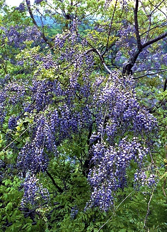

ヤマフジ
基本データ
- 日本名：やまふじ（山藤）
- 科目 ：マメ科
- 学名 ：Wisteria brachybotrys
| 生息地 | 盆地 | |
| 大きさ | 20～100cm | |
| 花の咲く時期 | 4～5月 | |
| 花の色 | 紫色 | |
| 花びらの枚数・形 | 1枚 |
園芸種の藤と区別がつかないほど見事な花を咲かせますが、花の丈が短く、つるが左巻きなのが特徴。つるは藤細工の材料としておなじみ。ちなみに フジ も日本原産。こちらのつるは右巻き

| 生息地 | 盆地 | |
| 大きさ | 20～100cm | |
| 花の咲く時期 | 4～5月 | |
| 花の色 | 紫色 | |
| 花びらの枚数・形 | 1枚 |